AD5M 3+2-Axis Tilt Table
A bolt-on two-axis tilting and rotating print bed that turns a consumer Flashforge Adventurer 5M into a 3+2-axis printer, allowing layers to follow part geometry rather than always lying flat. Six design revisions, two control systems, one rooted printer.
CAD Hero & Standalone Bench Prototype

Verification Status at a Glance
Explicit separation between built and physically tested hardware, CAD-verified geometry, and remaining printer integration work (as of 25 November 2026).
- V4, then V5.1 revision printed in PETG and assembled on a 232 mm test board.
- Both axes driven on the bench — first from a Raspberry Pi 5 + CNC Shield, then from an SKR mini E3 V2 running Klipper.
- Both optical home sensors read correctly, motion directions are verified, and the HOME_AB macro homes both axes.
- 12 V cooling fan running from the SKR board’s fan output.
- Flashforge AD5M rooted with Forge-X (Klipper) and tuned: 11×11 bed mesh, input shaping, pressure advance, and volumetric flow.
- Every revision verified before printing by collision sweeps and scripted measurements on exported STLs (42 checks for V5, 46 for V5.1).
- V6: slotted tilt-sensor bracket (14/14 checks), upright tray for the SKR board (18/18 checks, 0 audit fails), and 40 mm tilt motor clearance swap.
- Skipped-step detection macros, 52-touch nozzle probe calibration routine, and Fractal Cortex G-code converter (unit tests pass).
- Fix the −3° nose-down homing offset on the tilt axis and store true level via TT_SET_LEVEL.
- Mount the table in the AD5M and connect the SKR mini E3 V2 to the printer’s USB port.
- Run physical geometry calibration with the 52-touch nozzle probe routine.
- Complete first cold air run, followed by the first real 3+2-axis support-free print.
Why tilt the bed?
A conventional 3D printer stacks flat planar layers. Anything that protrudes sideways demands sacrificial support material, and every part is weakest across its layer lines. Tilting and spinning the print bed allows features to be built on their side or layers to wrap around geometry — eliminating overhang supports while aligning layer strength with the load path.
Open-source slicers such as Fractal Cortex can already generate 5-axis toolpaths, but accessible bolt-on hardware was missing for a consumer printer I already owned: the Flashforge Adventurer 5M (~$300, fast enclosed CoreXY, closed stock firmware). The goal was a reversible clamp-on table adding two rotary axes with zero permanent printer modifications.
| Requirement | Why It Matters | How the Design Meets It |
|---|---|---|
| Fits inside 220 mm cube build volume | The table eats into usable Z print height | Plate sits 105 mm above the bed, preserving 115 mm print height above the plate |
| Full Ø200 mm plate clears at every angle | A crash damages the table or printer gantry | Automated collision sweep across full tilt range at four spin angles on every revision |
| Repeatable home position | Every subsequent move is relative to home | Optical slot sensors on both axes triggered by rigid flags on the moving parts |
| 0.1 mm class accuracy at the nozzle | Layers on tilted surfaces must register cleanly | 5:1 GT2 belt reduction, bearing preload, crush-rib seats, 52-touch probe calibration |
| No permanent printer modification | Printer must still operate normally without table | Uprights clamp onto bed edge; electronics connect via USB only |
| Low cost, printable on the same printer | Student budget and single-printer fabrication | All structure in PETG; off-the-shelf 608 bearings, GT2 belts, and M10 threaded rod |
How the pieces fit together
Solid path shows the target on-printer pipeline; dashed path shows the current bench host setup.
A trunnion table built from printed parts and hardware-store steel
Two printed PETG uprights clamp onto the bed and carry the tilt axis on 608 skateboard bearings. A yoke of two arms on M10 threaded steel rods swings between them and carries a central hub, which supports the Ø200 mm spinning plate on a second pair of 608 bearings. Each axis is driven by a NEMA 17 stepper and a 5:1 GT2 belt (16-tooth to 80-tooth pulleys).
The Golden Bearing Load-Path Rule: Everything that turns presses strictly on a bearing’s inner ring through an 11.4 mm OD spacer; every printed seat touches only the outer ring. That single rule determined exact spacer heights (4.2, 5.8, and 1.2 mm plus spares) and a spin-axle nut preload of 1/8 turn past “no play.”
Every structural part prints directly on the AD5M without supports in PETG at 6 walls and 40% gyroid infill (Plate 1 ~193 g, Plate 2 ~198 g, Ø200 mm plate ~193 g, key/spacers/fit-coupon plate ~20 g).
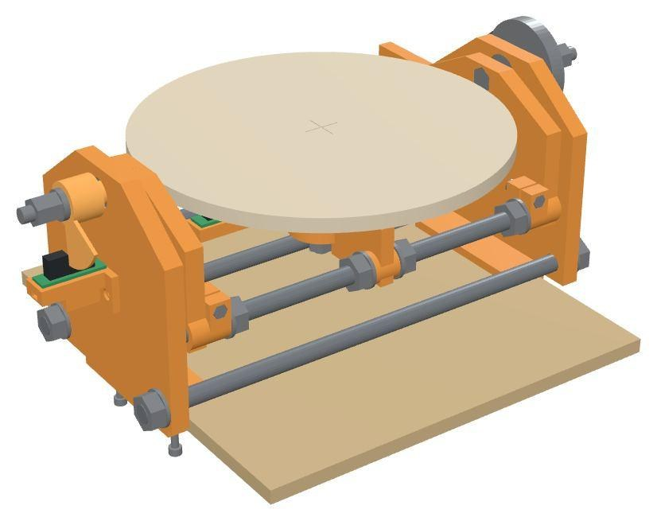
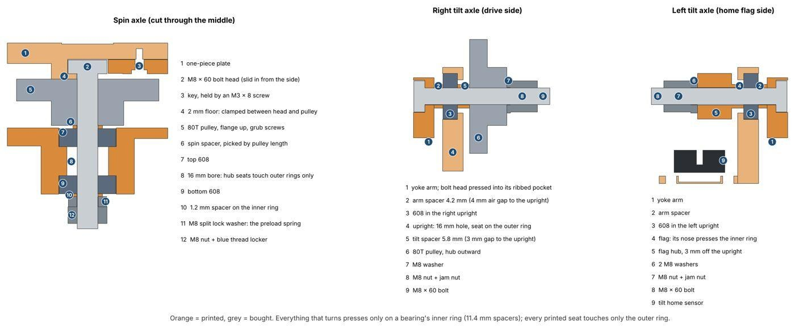
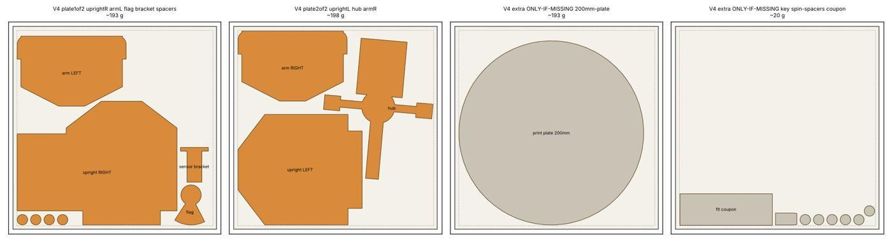
Six revisions, each driven by something that failed
Proof of Concept
All-printed mock-up with printed stand-in bearings, pulleys, rods, and TPU belts so kinematics could be turned by hand before buying hardware. Tilt axis sat 95 mm above the bed.
Problem: At 95 mm the full Ø200 mm plate hit the bed when tilted, forcing a multi-piece core with four removable “leaves” requiring mid-print pauses.
Raise the Axis
Raised the tilt axis to 105 mm above the bed and replaced printed structural rods with M10 threaded steel rod.
Trade-Off: Traded 10 mm of Z print height (115 mm left above plate) for zero removable leaves and zero pauses. Plate clears bed and base rods at all tilt and spin angles with motors, pulleys, and belts modeled.
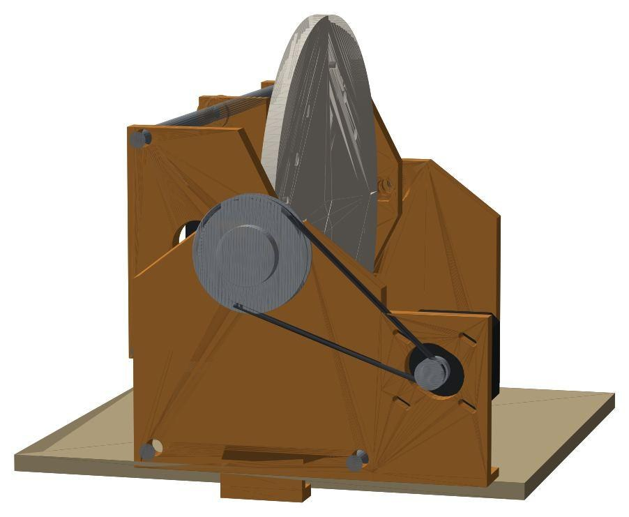
First Complete Build
Real 608 bearings, GT2 belts, aluminum pulleys, and NEMA 17 motors; full illustrated assembly guide, labelled spacer plate, parts checklist, and bench-test software.
Failed on Build: Arm collars did not grip their M10 rods (Case Study A). Spin home flag missed its optical sensor by ~2 cm despite 6 mm nominal CAD overlap (Case Study B).
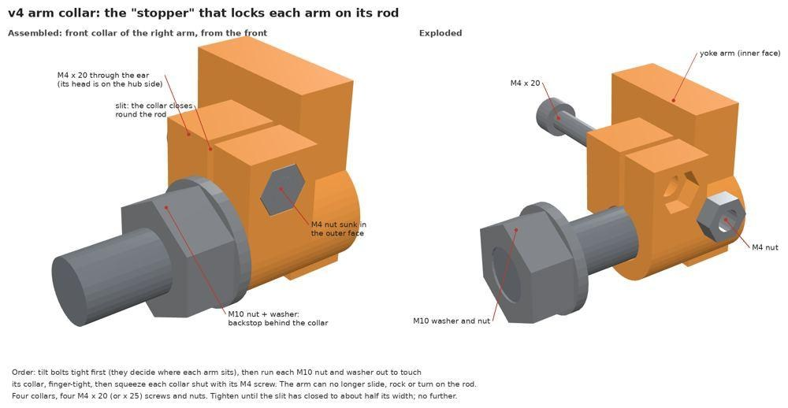
Fix What the Build Exposed
Six parts changed and two added (V4 uprights, spacers, and bearings carried over). Clamping collars with relief gaps, blind trapped rod pockets, a 20 mm longer spin flag on a new bolt-on sensor arm, and a hub centred to ±0.10 mm by four printed sleeves.
Evidence: Collision audit 0 fails; 42/42 dimensional mesh checks pass. Added a 24 g “fit coupon” plate printed first to test hole tolerances on the real printer.
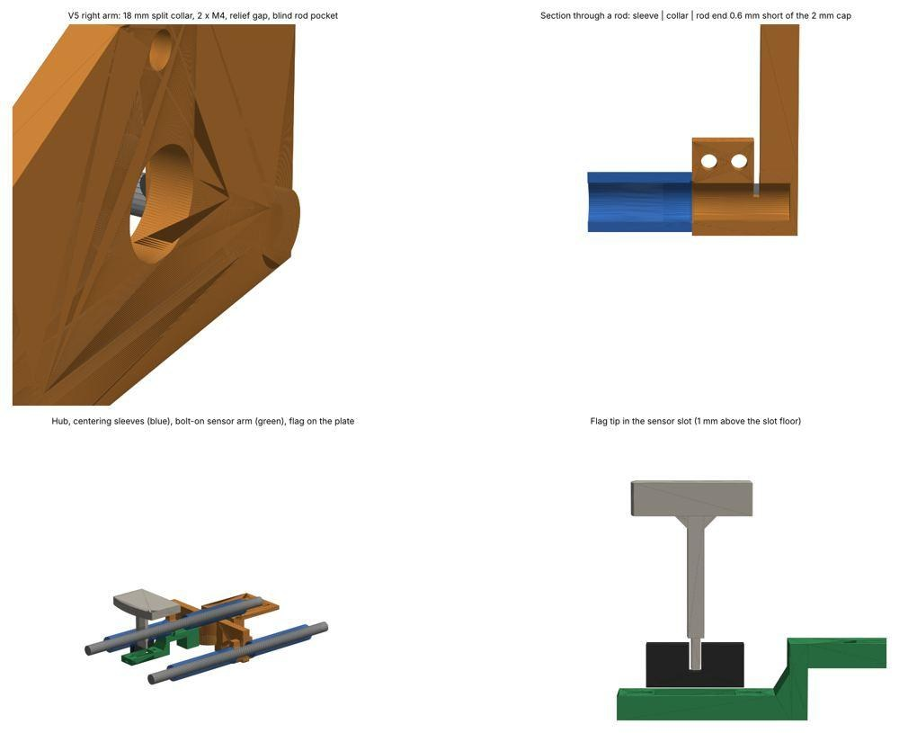
Electronics & Cable Management
Loose wires caused most bench faults, so V5.1 mapped the yoke’s swept volume and placed a front electronics tray with 40 mm clearance from moving parts (hooking cleanly onto the front base rod with no new holes), upright wire ducts, and a 60 mm tilt-axis cable loop.
Evidence: 46/46 mesh checks pass. Built the same evening; both axes then moved smoothly together on the bench.
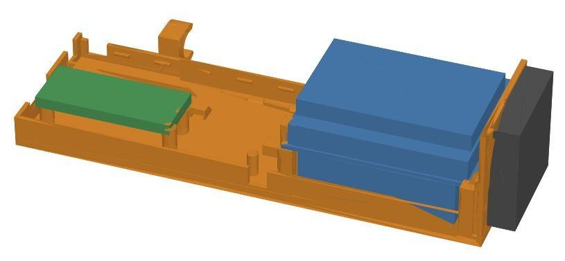
Integrated Electronics, Torque & Homing
System-wide design review set the V6 scope: replace the shield with one integrated SKR mini E3 V2 board (Case Study D), upsize the tilt motor from torque math (Case Study C), add an adjustable slotted tilt-sensor bracket, and detect skipped steps mid-print.
Evidence: SKR board flashed and running on bench. Upright SKR tray: audit 0 fails, 18/18 checks. Slotted sensor bracket: 14/14 checks. Queued for printing.
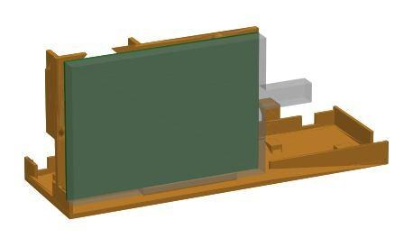
Four problems traced to root cause
Collars That Could Not Clamp
Symptom: Tightening the M4 pinch screw did not stop yoke arms sliding and rocking on M10 rods.
Root Cause: The rod bore was 0.5 mm oversize, requiring ~1.6 mm of slit closure to grip. The V4 slit was only 1.5 mm wide and cut through the top half only — bottoming out before gripping while the solid lower half resisted closing.
Fix: Interim locknuts and shims, then V5 redesign: 10.2 mm bore, 2 mm full-length slit, 1.6 mm relief gap freeing the jaw from the arm face, 2× M4 screws per collar, and blind outer rod pockets.
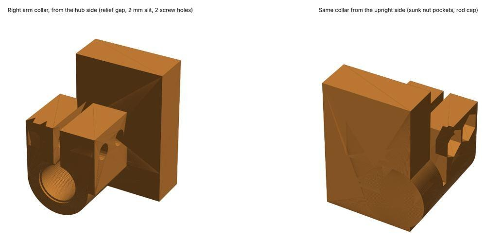
A Home Flag That Missed Its Sensor
Symptom: On the built V4, the spin home flag passed ~2 cm away from the optical sensor slot even though CAD showed 6 mm of overlap.
Root Cause: Header pins and solder joints held the sensor PCB off its assumed CAD seat, and the flag had zero margin. Simply lengthening the flag in place would have collided with the spin motor on every revolution.
Fix: Lengthened flag by 20 mm and relocated it to an 84 mm radius (clearing the motor’s far corner at 77.3 mm). A new bolt-on sensor arm adds an open pin clearance window under the PCB and ±1.5 mm adjustment slots.
Is the Tilt Motor Strong Enough?
Symptom: Tilt motion was jerky under load; raising driver current made the DRV8825 scalding hot without solving it.
Analysis: Tilting mass is 1.11 kg with centre of mass 34 mm below the axis, so gravity torque at 90° is 1.11 × 9.81 × 0.034 ≈ 0.37 N·m (0.43 N·m budgeted). Through the 5:1 belt, the thin pancake 17HS08 gives only ~1.5× margin.
Decision: A 40 mm NEMA 17 fits the same four mounting holes and provides 2.0 N·m (4.6×). Collision sweep cleared 40 mm and 48 mm bodies; 60 mm hits.
“The Motors Don’t Move”
Symptom: One motor clicked, the other did nothing, and both shafts turned freely by hand with zero holding torque.
Method: Change one variable at a time: swap drivers between sockets, swap motors between drivers, and short each coil by hand to feel the shaft stiffen. Any fault that moves with a component belongs to that component.
Three Separate Faults Isolated: (1) 2.54 mm Dupont pins forced into a 2.0 mm JST PH socket caused a 35 Ω coil reading instead of 3.5 Ω; (2) one dead DRV8825 driver (pot turned to maximum); (3) a CNC Shield X-axis socket that never passed step pulses.
From jumper wires to a real motion controller
Starting with a Raspberry Pi 5 generating Python step pulses into an Arduino CNC Shield V3 and DRV8825 drivers exposed every weakness of loose jumpers and potentiometer current trim — leading directly to the integrated SKR mini E3 V2.0 with software-set TMC2209 drivers under Klipper.
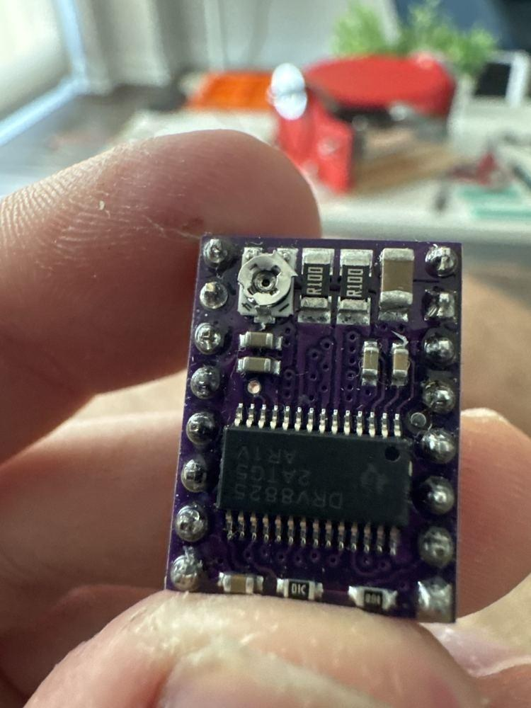
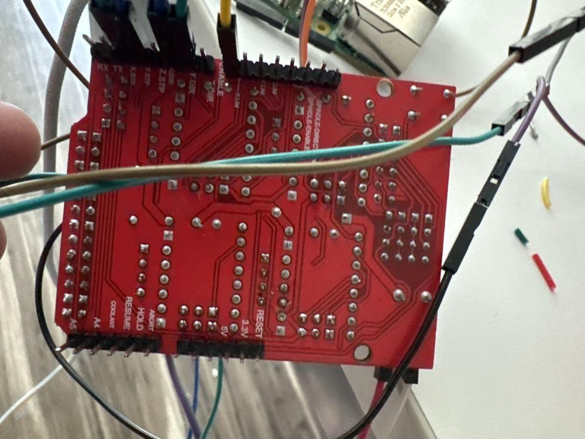
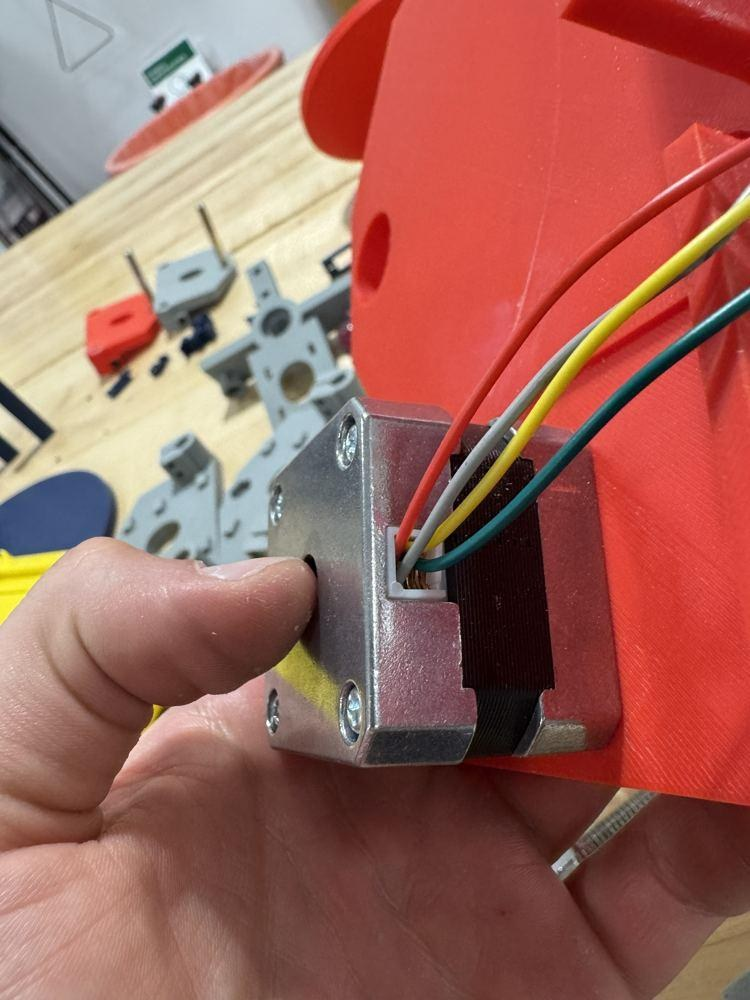
| Date | Bench Observation | Root Cause & Corrective Action |
|---|---|---|
| 23 Oct | One motor clicks; neither holds torque. | 2.54 mm Dupont pins in the motor’s 2.0 mm JST PH socket made poor contact (35 Ω coil reading). Ordered proper JST PH-to-Dupont cables. |
| 1 Nov | Spin motor dead in X socket; works in Y. | Single-variable swapping isolated a dead DRV8825 driver (pot turned to end stop) and a CNC Shield X channel that never passed step pulses. Retired X socket. |
| 2 Nov | Both motors move with new cables/drivers; tilt later pulses. | Tilt motor was plugged into the socket wired to the spin signal. Mapped tilt to Y and spin to Z in software rather than rewiring. |
| 3 Nov | Tilt jerky; raising current made driver scalding hot. | Torque margin, not current (Case Study C). Turned pot back down, added heatsinks and active fan cooling. |
| 10 Nov | System-wide design review. | Every electrical fault traced back to loose jumpers or hand-trimmed drivers. Selected an integrated board with UART TMC2209 drivers. |
| 18 Nov | SKR mini E3 V2 arrives on bench. | Built Klipper v0.11.0 firmware to match the printer (required a linker fix on a current compiler), flashed via SD card. Spin on XM, tilt on YM, optical sensors on endstops (3.3 V debug header). Runs under Pi + Klipper + Fluidd; sensors, directions, 12 V fan, and HOME_AB verified. |
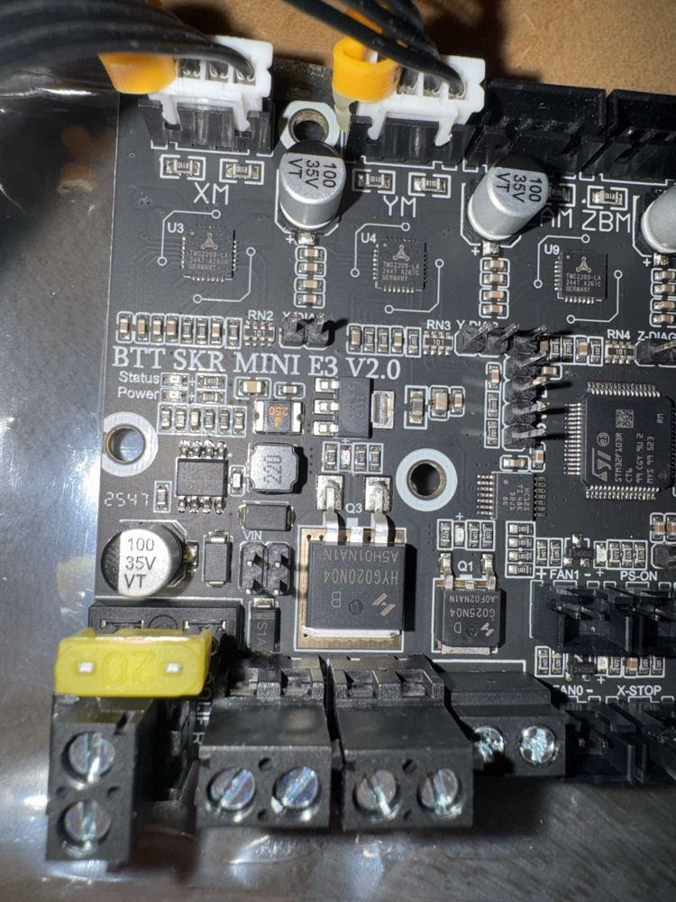
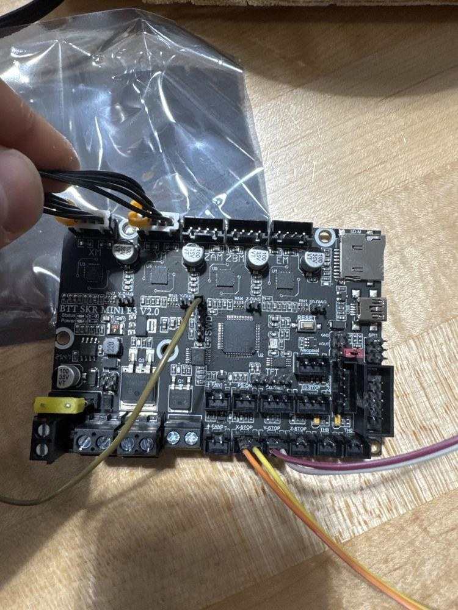
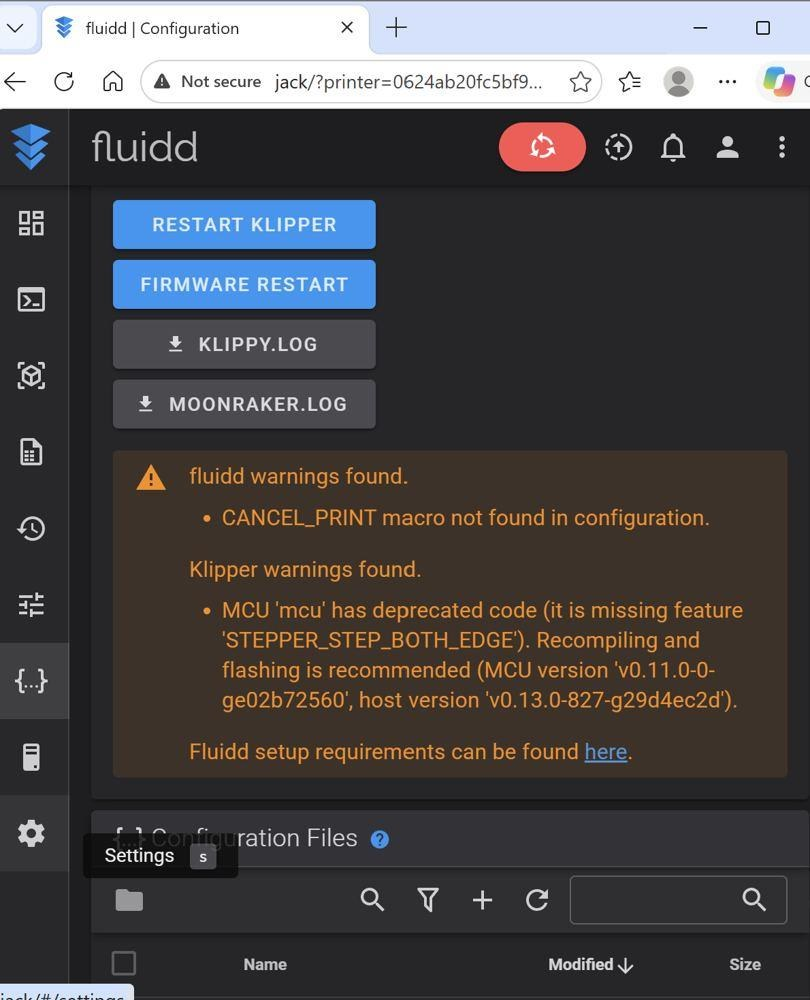
The CAD is code, and so are the checks
Every part is generated by Python scripts: changing a single parameter regenerates every STL, every print plate, and every audit. Nothing is called done until a script measures the exported meshes directly from disk.
Parametric CAD
All printed parts and purchased hardware (608 bearings, M8/M10 bolts, pulleys, motors) modeled with manifold3d and automatically arranged onto AD5M print plates.
Collision & Stack Audit
Sweeps tilt from +5° to −95° at four spin angles plus a full 360° spin; checks every bearing face, bolt length, and clearance while reporting tilting mass (1.11 kg) and CoM (34 mm below axis).
Measure Exported Meshes
Reloads STLs from disk and verifies rib circles, slit widths, sleeve lengths, flag depth, and watertightness — 42, 46, 14, and 18 checks across revisions, all passing.
5-Axis G-Code Converter
Converts Fractal Cortex output into AD5M G-code: mirrors tilts away from gantry, lifts/parks before rotations, finishes rotations unidirectionally against backlash, enables part fan, and injects skip checks.
Klipper Motion Macros
HOME_AB, TT_VERIFY (first skipped step re-homes and continues; second pauses print), TT_JOG, TT_SET_LEVEL, and TT_OFF (levels table prior to power-off so the yoke does not drop).
Calibration & Dry Run
Prints a 40 mm test block, probes it with the nozzle in 52 touches, and solves for real plate height, wobble, axis lean, and sag. Companion script replays G-code against CAD for collision checks.
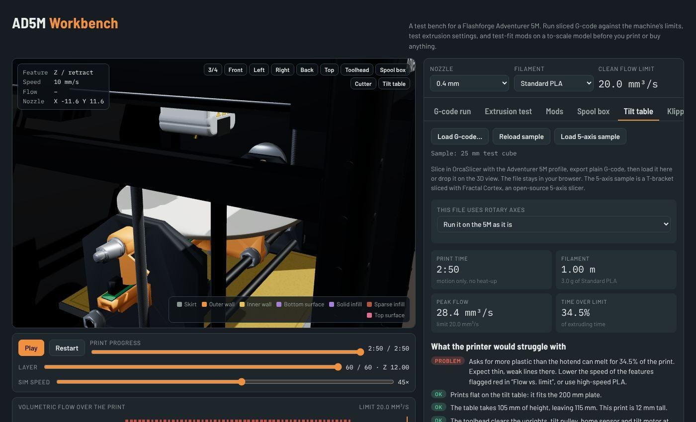
Desk-Test Rig & Why Fit Coupons Matter
Before migrating to Klipper, a Python script on the Raspberry Pi 5 drove both rotary axes with acceleration ramps, homed against the optical sensors, replayed rotations from a sample 5-axis file, and measured homing repeatability (target < 0.05°).
Case Study B proved that “CAD verified” is not the same as “physically fits.” Every revision since V4 ships with a 24 g fit-coupon plate printed first and an explicit list of unverified assumptions in the version README.
Preparing the Flashforge Adventurer 5M
Because the AD5M’s stock closed firmware cannot communicate with a secondary MCU, I rooted the printer with Forge-X to expose its native Klipper host. This enables the SKR mini E3 V2 to operate as synchronized rotary axes inside the same motion controller as X, Y, and Z.
| Measured Printer Parameter | Tuned Value |
|---|---|
| Extruder rotation distance | 4.39 (stock 4.7) |
| Input shaper (X / Y) | EI 63.4 Hz / MZV 52.8 Hz |
| Pressure advance (PLA / PETG) | 0.035 / 0.07 |
| Max volumetric flow (PLA / PETG) | 23 / 18 mm³/s |
| Bed mesh | 11 × 11 points |
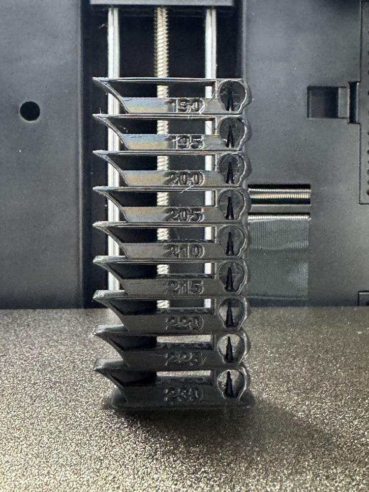
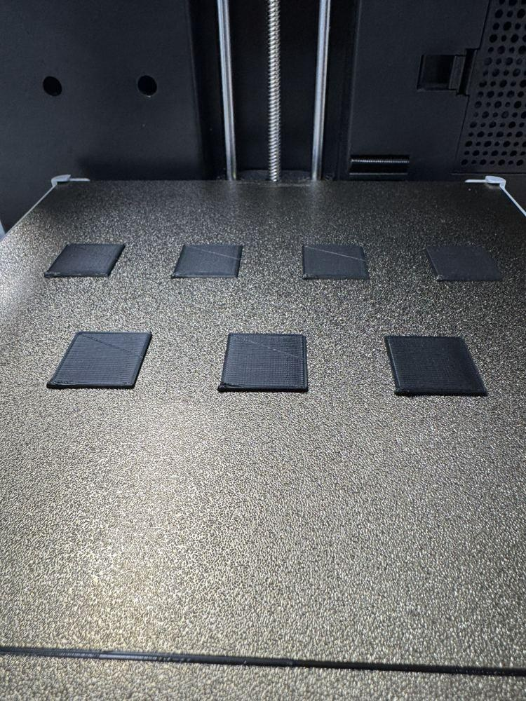
Current Prototype Mounted on the AD5M
The path to the first 3+2 print
Fix the Tilt Home Offset
After homing, the plate reads ~3° nose-down because the tilt flag enters the beam early. Shift flag ~2 mm, re-home, and store true level with TT_SET_LEVEL.
Print V6 Parts & Swap Motor
Print the verified V6 slotted sensor bracket and upright SKR board tray, then fit the 40 mm NEMA 17 tilt motor for 4.6× torque margin.
Bench Speed Ladder
Ramp speeds on the bench to locate where steppers first skip, then derate operating speed to 60–70% of that limit.
Move to the Printer (USB)
Mount the table, plug the SKR board into the AD5M’s USB port, and verify Forge-X Klipper enumerates it — the biggest remaining integration unknown.
52-Touch Calibration & Air Run
Execute the 52-touch nozzle probe routine, followed by a cold-nozzle dry run with the bed lowered to confirm live motion clearances.
First 3+2 Support-Free Print
Print a T-bracket sliced in Fractal Cortex that requires sacrificial support on a flat printer and zero support on the tilt table.
What I learned
Build early, then measure
The V4 build uncovered two flaws no CAD review caught. A printed fit coupon costs 24 g of plastic; a wrong yoke arm costs a full day.
Change one variable at a time
Three separate electrical faults initially looked like one dead-motor failure. Swapping parts systematically one by one separated every root cause.
Find the cause, not the knob
Turning up driver current looked like a fix for jerky tilt and nearly cooked a driver. A one-line torque calculation exposed the real mechanical limit.
Write down what is unverified
Every version README ends with what has not yet been tested. It keeps documentation honest and dictates the exact next bench experiment.
I used an AI engineering assistant (Claude) as a design partner: it wrote the parametric CAD scripts, automated checks, and firmware configs from my requirements, measurements, and bench results. I set the engineering goals, printed and assembled every part, did all wiring and testing, took the physical measurements, and made every design decision. The private repository jojcdm/ad5m-tilt-table preserves the full commit history.